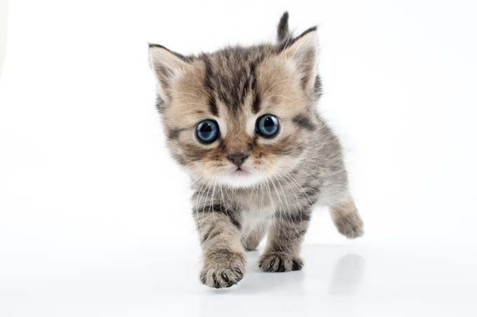

Cute kittens are the most important thing in the world.
It is essential in the world that we have these amazing animals.
If we did not have kittens, more people would suffer from depression
Kittens are number 1
Make sure your kitten is well loved.
Cute puppies are both playful and happy
It is hard not to like puppies since they are so friendly
If someone who liked puppies did not have one it would make them very sad
Puppies grow into dogs after they mature for some time
Make sure that your puppy is well loved.